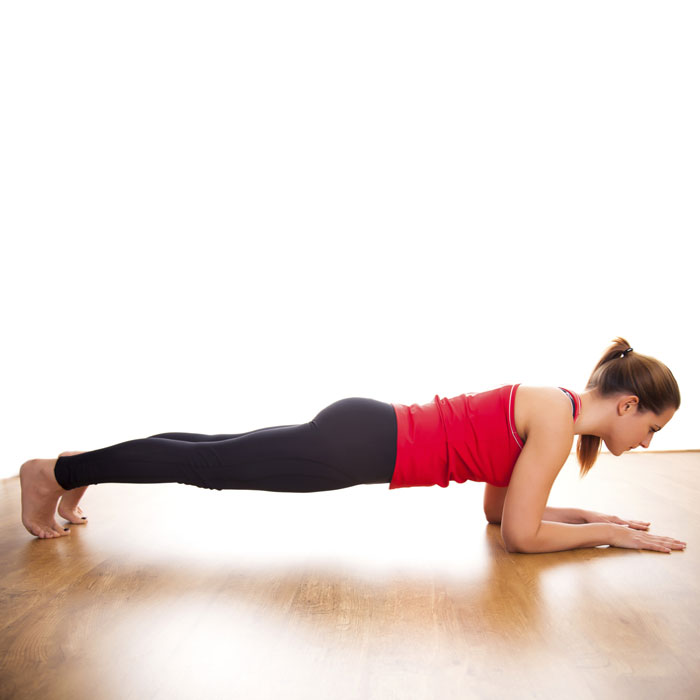

PLANK YAPMA
 PLANK NEDİR?Plank; karın kasları başta olmak üzere bacak ve göğüs kaslarını geliştiren ve yer ile 45 derece oluşturacak şekilde yapılan bir egzersiz türü olarak adlandırılır. Plank hareketi düzgün bir şekilde uygulandığında güç, denge ve dayanıklılık gibi bedensel özelliklerin gelişmesini sağlar. PLANK HAREKETİ NASIL YAPILIR?Plank hareketi yapmak için yere bir mat sermeniz yeterli olacaktır. Yüz üstü şınav çeker gibi pozisyon alarak dirsekleriniz ve ayak parmaklarınızı yere koyarak bacaklarınızı omuz genişliği hizasında açmalısınız. Tüm ağırlığınızı ayak parmaklarınıza ve önkollarınıza ve dirseklerinize verin. Vücudunuzu düz tutun; başınız ve sırtınız aynı hizada olmalı. Karın kaslarınızı sıkarak bu pozisyonda en az 15-20 saniye kadar sabit durmalı ve birkaç set halinde hareketi tekrarlamalısınız. İlk zamanlar 15-20 saniye dayanmanız bile biraz güç gelecektir ama daha sonra bu süreyi 1-2 dakikaya çıkarabilirsiniz. PLANK HAREKETİNİN FAYDALARI NELERDİR?1. Sırt ve bel ağrısını azaltır. Eğer ki ağrısı çekiyorsanız; plank, duruşunuzu geliştirmenize yardımcı olabilir! Plank hareketi omurganızın özellikle üst kısmına destek sağlar ve sırt ağrılarının azalmasına yardımcı olur. Amerikan Egzersiz Konseyi’ne göre; düzenli olarak plank hareketi yapmak sadece sırt ağrısını önemli ölçüde azaltmakla kalmaz aynı zamanda kaslarınızı da güçlendirir ve özellikle sırtınızın üstündeki bölgelerde tüm sırtınız için güçlü bir destek sağlar. 2. Plank hareketiyle göbeğinizi eritebilirsiniz.Plank hareketi tüm karın kaslarınızı çalıştıracağı için sürekli ve düzenli yapılması sayesinde karın kaslarınızı güçlendirecek ve göbek bölgenizdeki yağı eritmesinde işe yarayacaktır. 3. Daha dik durmanızı sağlar.Düzenli plank hareketini çalışmak sırt, omuz, kol ve boyun kaslarını kuvvetlendirdiğinden duruşunuzu da düzeltecektir. İyi bir duruş, kemiklerinizi ve eklemlerinizi doğru hizada tutar; bu, hem kemiklerinizin hem de eklemlerinizin daha iyi korunacağı ve daha sağlıklı olacağı anlamına gelir, ancak kaslarınızın genel etkinliğinin de artırılacağı anlamına gelir.Dik bir duruş sırt veya omurganızın doğru konumda olmasını sağlar ve böylece daha az sırt ağrısı çekersiniz. Her şeyden önce, dik duruşu olan biri daha iyi, daha sağlıklı ve daha kendine güvenen görünüyo Düzenli plank hareketini çalışmak sırt, omuz, kol ve boyun kaslarını kuvvetlendirdiğinden duruşunuzu da düzeltecektir. İyi bir duruş, kemiklerinizi ve eklemlerinizi doğru hizada tutar; bu, hem kemiklerinizin hem de eklemlerinizin daha iyi korunacağı ve daha sağlıklı olacağı anlamına gelir, ancak kaslarınızın genel etkinliğinin de artırılacağı anlamına gelir.Dik bir duruş sırt veya omurganızın doğru konumda olmasını sağlar ve böylece daha az sırt ağrısı çekersiniz. Her şeyden önce, dik duruşu olan biri daha iyi, daha sağlıklı ve daha kendine güvenen görünüyo 4. Metabolizmayı hızlandırır.Plank hareketinde tüm vücut kaslarında kontraksiyon gerçekleşir, bu da kalp atışını hızlandırır. Kalp atışının artması da kalori yakımı sağlar. Plank hareketi, tüm vücuda meydan okumak için mükemmel bir yöntemdir; çünkü her gün bunları yapmak, egzersiz veya oturma gibi diğer geleneksel karın egzersizlerinden daha fazla kalori yakar.Bu egzersizi günlük olarak yaparak güçlendirdiğiniz kaslar, hareketsizken bile daha fazla enerji yakmanızı sağlar. Bu özellikle, günün çoğunu bir bilgisayar başında oturarak geçiriyorsanız önemlidir.Sağlıklı, güçlü kaslara sahip olmak, vücudunuzun sürekli olarak daha fazla enerji yakmakta olduğu anlamına gelir ve kalorileri yağ şeklinde depolamanın önünü de keser. 5.Vücudun esnekliğini arttırır.Doğru bir plank hareketi sayesinde boyun ve omuz bölgeleri, kürek kemikleri, alt ve üst bacaklar, ayak tabanları ve parmak uçları esnetilmiş olur. Bu da vücudun genel esnekliğini arttırır. Plank hareketi sayesinde her zamankinden daha esnek olacaksınız. 6.Plankın etkisi genel ruh halinize de yansıyacak .Plank hareketinin sinirlerimiz üzerinde de etkisi vardır. Doğru ve düzenli yapılan plank hareketi sayesinde genel ruh halinizin daha iyi olduğunu fark edeceksiniz. Plank hareketiyle stres dolayısıyla sertlerşmiş ve gerilmiş kaslarınız gevşeyecek ve vücuttaki gerginlik azalacaktır. |